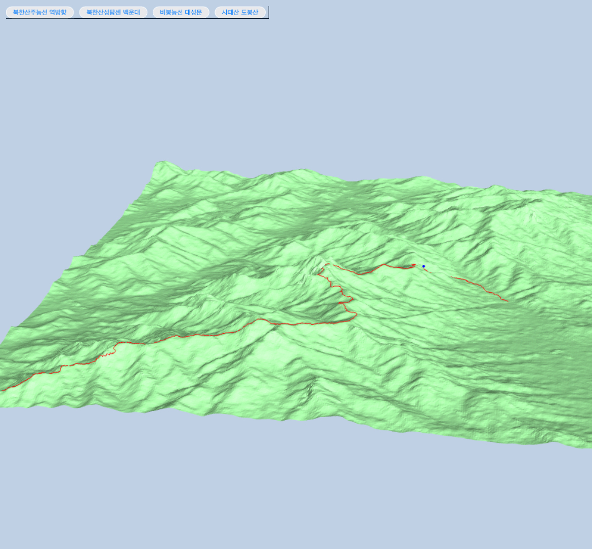
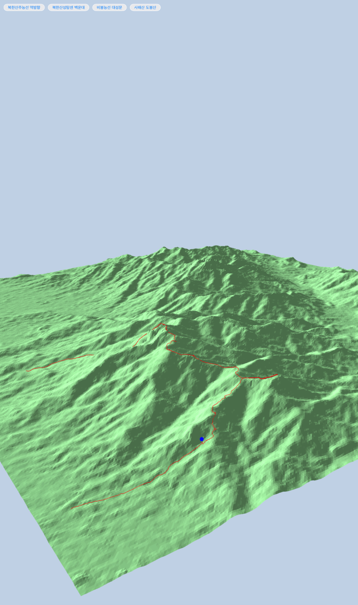

최근에 등산을 다니며 스포츠워치를 구매를 하였다. 그래서 GPS정보를 이용하여 내가 이동한 경로를 저장하고 관리할 수 있게 되었다. 하지만 등산앱, 스포츠앱들이 조금씩 기능이 마음에 들지 않아서 직접 받은 gpx파일 정보를 가지고 여러가지 기능을 구현해보게 되었다.
1. 인증용 Stats 정보 만들기
인증용 stat은 투명한 이미지 위에 거리, 획득고도 등 기록을 표시하는 것이다. Strava의 투명 인증샷과 거의 똑같다고 보면 된다. 하지만 직접 GPX파일을 다루기 때문에 고도 그래프까지 추가하여 표시되도록 하였다. 이 이미지를 저장 후에 이미지복사 -> 인스타에 스티커로 붙여넣어 사용하게 된다.
[미리보기]
- GPX파일을 로드하면 경도,위도 정보를 읽고 거리 표시
- 고도정보를 읽고 누적고도를 계산
- 총 시간 계산
- 경로를 그래프로 표시
- 고도를 그래프로 표시
- 각 측정값들을 수정하고 이미지 갱신을 할수 있도록 처리
- 최종 반영 투명 이미지를 저장
배경은 예시이고 stat 정보만 기록된 이미지가 저장된다.
1.1. 시행착오
[획득고도오차] 첫 번째에선 획득고도가 25미터 밖에 안나왔다. 최소 700미터는 넘어야 하는 상황에서 말이다. 이는 GPS가 오차가 많기 때문에 보정하기 위해 threshold 값을 지정한다. 이때 GPS측정 주기가 짧으면 상승고도 변화분이 항상 threshold값보다 작아 누적이 안되서 생기는 문제이다.
- 이동평균 사용하기
- 직전값 기록후 사용하기
둘중 하나를 골라서 사용할 수 있고 이동평균이 좀더 깔끔한 것 같다. (추후 경로,고도 그래프를 그릴때도 사용가능)
[경로 뾰죡하게 튀는 현상] 경로를 그리게 되면 가끔씩 튀는 현상이 발생했다. 이때 GPT가 만들어준 SVG 지도 매핑에서는 경로가 튀는게 없는데 내가 캔버스로 만든 버젼은 튀게되었다.
ctx.lineJoin = 'round';
ctx.lineCap = 'round';이유는 선을 그릴때 아주 좁은지역에서 방향을 크게 바꾸는 경우 (경사로가 험할때 지그재그로 길이 나있는 경우)
선의 폭만큼 그대로 그리기 때문에 날카롭게 뾰죡한 부분이 생기는 것이다.
이는 선 자체를 둥글게 그리는 방법 즉 위 round 를 주어서 해결하였다.
[최고 고도 오차] GPS내장 시계라서 위도,경도는 생각보다 정확하게 추정이 된다. 고도는 GPS와는 다르게 사실 기압계를 가지고 잰다. 그리고 이게 오차가 상당하다. 10-30미터 까지도 차이가 난다.
이를 핸드폰 앱은 어떻게 보정하는지 리서치해보니
- GPS로 경로 추적
- 3D 지형정보 DEM을 가지고 고도 재 매핑
결국 DEM이라는 별도의 정확한 정보를 가지고 다시 재는 것이였다! 이를 정확히 반영하는 것은 상당히 어려운 일이다.
기압기반 고도계는 오차가 있어 영점 조절이 안된 느낌으로 생각하면 되므로 직접 등반하여 최고높이 봉우리 미터를 알고있으니 차이만큼 수동으로 보정하도록 하였다.
2. OpenStreetMap
openstreetmap은 개방 라이선스로 자유롭게 사용가능한 세계지도이다. 이를 이용하여 지도를 그리고 그 위에 경로를 표시할수 있다. leafletjs 이걸 사용하여 편하게 지도를 표시할수 있다.
<div class="map-wrapper">
<div id="map"></div>
</div>
<style>
.map-wrapper {
margin: 0px; /* 블로그 p 태그 margin 영향 제거 */
padding: 0px;
}
#map {
margin: 0 !important;
padding: 0 !important;
height: 420px; /* 원하는 높이 */
width: 100%; /* 가로는 화면 꽉 채우기 */
box-sizing: border-box;
overflow: hidden;
}
</style>위와 같이 div 로 id="map" 엘리먼트를 만들고
const map = L.map('map');
// Set initial center and zoom first
map.setView([36.5,127.8],7);
const base = L.tileLayer('https://{s}.tile.openstreetmap.org/{z}/{x}/{y}.png',{attribution:'© OpenStreetMap 기여자',crossOrigin:true}).addTo(map);기본지도를 띄울수 있다.
let trackLayer = null;
const latlngs=pts.map(p=>[p.lat,p.lon]);
if(trackLayer)trackLayer.remove();
map.createPane('svgOffsetPane');
map.getPane('svgOffsetPane').style.transform = 'translateY(34px)';
// 폴리라인을 새 pane에 추가
trackLayer = L.polyline(latlngs, { pane: 'svgOffsetPane', color:'#f43f5e',weight:4,opacity:0.9}).addTo(map);
map.fitBounds(trackLayer.getBounds(),{
padding: [20, 20]
});- polyline을 새로 만들어 map에 포함시키면 경로가 표시된다.
- [주의!] 경로 자체가 svg로 렌더링 되는데 이 좌표계산시에 웹페이지 css등으로 margin이 들어가면 오차가 발생한다. 이때 pane를 만들어서 Y transform을 미리 해서 조정 가능. 일반 웹페이지에선 조정 필요없지만 필요한 경우 위처럼 하면 됨.
3. 3D 표현하기
등산을 하다보니 내가 이동한 경로가 지형 기준으로 어떻게 움직인건지 3차원에서의 경로가 궁금해졌다.
가끔씩 유투브 같은 것 보면 등산코드를 3차원으로 이동하는 것을 보여주는 것을 보았는데 그런 느낌으로 경로를 보았으면 했다.


(북한산 지형위에 표시된 경로들) 1
3.1. 지형정보
지형데이터의 소스 국토지리연구원이나 해외 오픈데이터 사이트에서 구할수 있다. 국내 정밀지형은 해상도가 1m 까지도 나온다고 한다. 하지만 인증 및 여러절차가 있으므로 해상도가 30m인 아래 사이트에서 구하였다. https://opentopography.org
- Data -> Find Data Map
- “Select a region”
- 데이터 소스 선택 (어떤것이 좋은지 몰라서 일단 SRTM GL1로 선택)
- Geo데이터를 tif 포맷으로 선택
3.2. GeoTIFF.js
https://github.com/geotiffjs/geotiff.js/
이 라이브러리는 tif 파일을 읽고 지형정보를 읽어들일수 있다.
- 읽어들인 지형정보를 가지고 THREE.js 3D 라이브러리의 평면에 매핑하고 높이 맵을 만든다.
- GPX정보를 읽어들이고 THREE.js 의 Line을 만든다.
- Line을 따라 움직이는 물체를 만든다 (구)
[주의!]GPX의 경로를 만들때 x,y좌표는 GPX 데이터 기반으로 계산하고, 높이는 tif의 높이로 한다.
const geometry = new THREE.PlaneGeometry(terrainWidth, terrainHeight, demWidth-1, demHeight-1);
const vertices = geometry.attributes.position.array;
for(let i=0,j=2;i<rasterData.length;i++,j+=3){
vertices[j] = rasterData[i]/10; // DEM 스케일
}
geometry.computeVertexNormals();
const material = new THREE.MeshStandardMaterial({
color:0x88cc88,
wireframe:false,
side:THREE.DoubleSide,
flatShading:true
});
terrainMesh = new THREE.Mesh(geometry, material);
terrainMesh.rotation.x = -Math.PI/2;
scene.add(terrainMesh);- TIF파일의 raster 데이터를 그대로 plane에 대입한다.
- 재질을 만들고 지오메트리와 재질을 합쳐만든 메쉬를 scene에 추가
// 좌표 변환
function latLonToXZ(lat, lon){
const [minX, minY, maxX, maxY] = geoBounds;
const x = ((lon - minX)/(maxX - minX) - 0.5) * terrainWidth;
const z = (1 - (lat - minY)/(maxY - minY) - 0.5) * terrainHeight;
return {x, z};
}- gpx의 정보를 3d 좌표계로 변환
const [minX, minY, maxX, maxY] = geoBounds;
let ix = Math.floor((p.lon - minX)/(maxX - minX) * (demWidth - 1));
let iz = Math.floor((maxY - p.lat)/(maxY - minY) * (demHeight - 1));
// 범위 clamp
ix = Math.max(0, Math.min(ix, demWidth-1));
iz = Math.max(0, Math.min(iz, demHeight-1));
const idx = iz * demWidth + ix;
let y = rasterData[idx]/10 + 1;
if(isNaN(y)) y = 0;
vertices.push(pos.x, y, pos.z);- 높이값을 얻기 위해 GPX좌표를 TIF좌표계로 변환한뒤 tif의 높이값을 구함.
4. 생각해 볼만한 것
- 3D 지형에 위성사진 매핑 하기
- GPS api를 이용해서 3d지도에서 현재 위치 표시하기
GPT의 도움을 받았는데 좌표계에서 계속 2선택지 중 하나로 (둘다 잘못됨) 변경되는 현상이 있었다. 그래서 코드를 하나하나 이해해보니 뭔가 큰 그림에서는 맞지만 세세한 부분부분에서의 차이가 결과를 크게 바꾸었다.
예를 들면 GeoTIFF를 THREE 의 plane에 그대로 매핑 하면 좌표계가 x, y 좌표와 그 값을 매핑할텐데 THREE.js는 z가 깊이이므로 좌표계가 다르다.
그리고 tif는 먼쪽부터 채우는데 GPX는 가까운쪽 기준으로 삼으면 경로의 시작위치가 완전 변경된다. 이런 것들을 조금씩 조정해주어야 한다. 이때 코드를 이해하지 못한다면 GPT는 계속 “완벽히 보정된 예제를 만들어드릴수 있어요” 얘기를 하지만 이미 잘못되었던 내용을 계속 반복하게 되는 것이다.
따라서 인공지능의 도움은 많이 받아도 그걸 이해하지 못하면 시행착오를 상당히 겪을수밖에 없다.
-
북한산 주 능선, 사패산-도봉산 연계 ↩︎